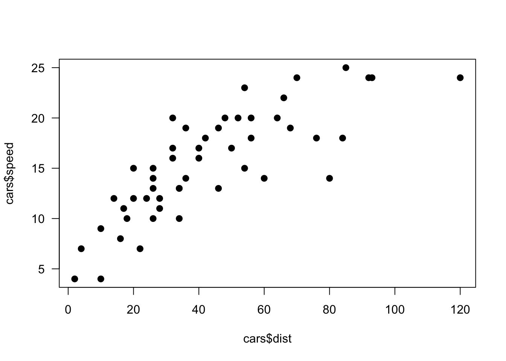
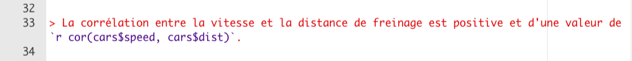
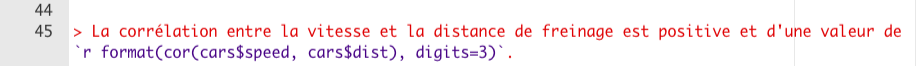
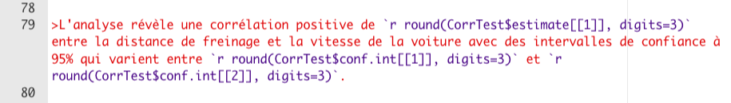
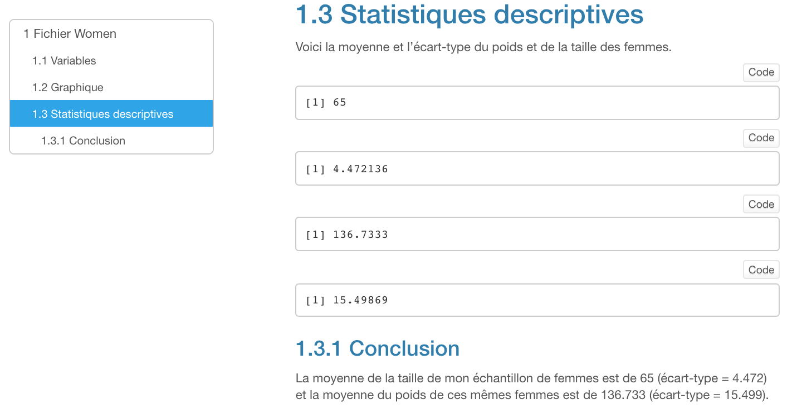

Code
model_1 <- lm(cars$dist ~ cars$speed) # modèle linéaire simpleDans ce chapitre, nous allons voir comment extraire le résultat d’un code R (ex: calcul de la moyenne) et l’intégrer dans le texte de notre document R Notebook. À titre d’exemple, le texte ci-dessous intègre les valeurs de la droite de régression que nous avons dessinée dans le graphique amélioré du Chapitre @ref(ExempleR).
model_1 <- lm(cars$dist ~ cars$speed) # modèle linéaire simpleL’analyse de régression simple indique que la valeur de l’intercept est estimée à -17.579 et que la valeur du coefficient b de la variable vitesse à 3.9324. L’analyse supporte l’hypothèse que la vitesse est un bon prédicteur de la distance (t(48) = 9.464, p = 1.49e-12.
L’un des nombreux avantages du langage R est la facilité avec laquelle nous pouvons extraire des valeurs spécifiques générées par du code R. Dans l’exemple du Chapitre @ref(ExempleR), à l’aide d’un diagramme de type nuage de points, nous avons mis en relation la variable dist avec la variable speed. À titre de rappel, voici de nouveau cette relation :
plot(cars$dist, cars$speed, # variables mises en relation
type="p", # nuage de points
pch=16, # type de points (remplis)
cex=1.25, # grosseur des points
las=1) # orientation de l'axe des y
Examinons de nouveau cette relation mais en calculant la corrélation qui existe entre ces deux variables. Ci-dessous, je présente deux approches pour extraire les codes R : une simple et une complexe.
La fonction cor() permet d’obtenir et d’extraire directement la valeur de la corrélation entre différentes variables. Voici le bloc de codes R :
cor(cars$speed, cars$dist)[1] 0.8068949Voici l’interprétation :
La corrélation entre la vitesse et la distance de freinage est positive et d’une valeur de 0.8068949.
Dans la phrase précédente, la valeur 0.8068949 a été extraite directement à partir du code R présenté dans le bloc de codes R ci-haut. De plus, pour accentuer l’effet de l’interprétation, j’ai ajouté le code de citation de R Markdown (>) Voici à quoi ressemble la phrase dans mon document R Notebook :

Notez qu’il faut entourer le code de la valeur extraite par des accents graves (voir Figure @ref(fig:nb100)). Et il ne pas oublier d’insérer r devant chaque objet R qui est intégré dans le texte. Aussi, le texte est en rouge parce que c’est une citation dans mon texte R Notebook.
Si nous désirons contrôler le nombre de décimales, une solution consiste à ajouter la fonction format(x, digits = ) à votre code dans R Notebook. Voici un exemple et la Figure @ref(fig:nb103) montre comment écrire le code dans R Notebook :
La corrélation entre la vitesse et la distance de freinage est positive et d’une valeur de 0.807.

La fonction cor.test de R permet de calculer la corrélation entre la distance de freinage et la vitesse d’un véhicule automobile. Cette même fonction, cependant, permet d’examiner d’autres statistiques associées à l’estimation de la corrélation entre les deux variables.
Pour les besoins pédagogiques, nous allons créer un objet R du nom de CorrTest qui va mémoriser l’estimation de la force de la relation entre la variable distance (cars$dist) et la variable vitesse (cars$speed). Voici le code R :
( CorrTest <- cor.test(cars$dist, cars$speed) )
Pearson's product-moment correlation
data: cars$dist and cars$speed
t = 9.464, df = 48, p-value = 1.49e-12
alternative hypothesis: true correlation is not equal to 0
95 percent confidence interval:
0.6816422 0.8862036
sample estimates:
cor
0.8068949 À première vue, il est plutôt difficile d’extraire les valeurs de cet objet R. L’approche la plus simple consiste à vérifier les sous-objets disponibles dans l’objet R que nous avons créé à l’aide de la fonction str().
str(CorrTest)List of 9
$ statistic : Named num 9.46
..- attr(*, "names")= chr "t"
$ parameter : Named int 48
..- attr(*, "names")= chr "df"
$ p.value : num 1.49e-12
$ estimate : Named num 0.807
..- attr(*, "names")= chr "cor"
$ null.value : Named num 0
..- attr(*, "names")= chr "correlation"
$ alternative: chr "two.sided"
$ method : chr "Pearson's product-moment correlation"
$ data.name : chr "cars$dist and cars$speed"
$ conf.int : num [1:2] 0.682 0.886
..- attr(*, "conf.level")= num 0.95
- attr(*, "class")= chr "htest"Ouf, il y a beaucoup d’information dans ce résumé. Mais nous pouvons voir certaines similitudes avec les résultats du calcul de la corrélation. Les 9 sous-objets présents dans l’objet CorrTest peuvent être identifiés à cet objet à l’aide du signe $. Regardons de plus prêt quelqu’uns d’entre eux :
Vous aurez certainement déduit qu’il est possible d’obtenir directement ces valeurs à partir du code R qui désigne chacun de ces sous-objets. Par exemple, je peux créer un bloc de codes R qui demande d’évaluer la valeur de chacun de ces sous-objets R :
CorrTest$statistic # test t t
9.46399 CorrTest$parameter # degrés de libertédf
48 CorrTest$p.value # valeur p[1] 1.489836e-12CorrTest$estimate # corrélation cor
0.8068949 CorrTest$method # type de corrélation[1] "Pearson's product-moment correlation"CorrTest$conf.int[1] # valeur inférieure des IC à 95%[1] 0.6816422CorrTest$conf.int[2] # valeur supérieure des IC à 95%[1] 0.8862036Je dois avouer que présentée ainsi, le résultat obtenu par l’extraction des sous-objets de notre objet R est un peu mêlant. Donc, ci-dessous, j’utilise la fonction rbind1 pour attribuer un nom à chaque élément et de les regrouper dans une même fenêtre. Et pour extraire uniquement la valeur que je désire, j’utilise les doubles croches [[ ]]. Ce bloc de codes est purement facultatif mais il permet de démontrer que nous pouvons manipuler le format de présentation de différents sous-objets R.
options(scipen=999) # retirer la notation scientifique
rbind(test_t = CorrTest$statistic[[1]],
dl = CorrTest$parameter[[1]],
valeur_p = CorrTest$p.value[[1]],
correlation = CorrTest$estimate[[1]],
lower.ic = CorrTest$conf.int[[1]],
upper.ic = CorrTest$conf.int[[2]]
) [,1]
test_t 9.463989990298367516
dl 48.000000000000000000
valeur_p 0.000000000001489836
correlation 0.806894900689210437
lower.ic 0.681642222094305583
upper.ic 0.886203628526014975Bon, maintenant voici la section la plus intéressante vers notre objectif ultime qui consiste à ne pas copier les valeurs calculées par R mais à les extraire et à les intégrer directement dans du texte.
Imaginons que nous voulons écrire :
L’analyse révèle une corrélation positive de 0.806 entre la distance de freinage et la vitesse de la voiture avec des intervalles de confiance à 95% qui varient entre 0.682 et 0.886.
Sans aucun doute, nous pouvons faire des erreurs de transcription quand vient le temps d’écrire les chiffres et les décimales dans notre texte. Avec R Markdown, nous pouvons extraire nos valeurs directement de notre objet R (CorrTest) et les intégrer dans notre texte. Mais, comme nous l’avons fait ci-haut, il faut entourer le test par des accents graves (voir Figure @ref(fig:nb102)). Et il ne pas oublier d’insérer r devant chaque objet R. De plus, la fonction round( , digits=3) permet d’arrondir après 3 décimales les valeurs extraites.

Voici le même texte obtenu directement avec les codes d’extraction de résultats R de la Figure @ref(fig:nb102) :
L’analyse révèle une corrélation positive de 0.807 entre la distance de freinage et la vitesse de la voiture avec des intervalles de confiance à 95% qui varient entre 0.682 et 0.886.
Mais c’est donc compliqué, me direz-vous ? J’avoue que toute cette démarche, dont l’objetif ultime est de ne pas avoir à recopier quelques chiffres ici et là, peut vous sembler une perte de temps. De plus, je vous entends dire : “Moi, faire une erreur de transcription ? Jamais, ce n’est pas mon style, je suis personne ordonnée et systématique !” Soyez assurés que je n’ai jamais rencontré personne qui n’a pas fait une petite erreur de transcription de son logiciel statistique à son logiciel de traitement de texte. Bref, vous aussi, vous pouvez faire cette erreur. Je l’ai déjà fait moi aussi…
De plus, n’oubliez pas que si jamais, les valeurs des variables dist et speed devaient changer (en ajoutant des voitures dans notre fichier de données), les codes pour extraire les valeurs ne changeraient pas et notre texte présenterait automatiquement les bonnes valeurs. Quelle belle façon de gagner du temps !
Dans le but de mettre en pratique l’extraction de résultats obtenus dans des codes R, voici un exercice. À partir du fichier Exercice R Notebook que vous avez complété lors de l’Exercice 5, veuillez ajouter :
Statistiques descriptivesVoici la moyenne et l'écart-type du poids et de la taille des femmesmean()sd()Conclusion.Code dans le coin supérieur droit)
Cette fonction combine les objets par rangée, d’où l’expression r (row) bind.↩︎